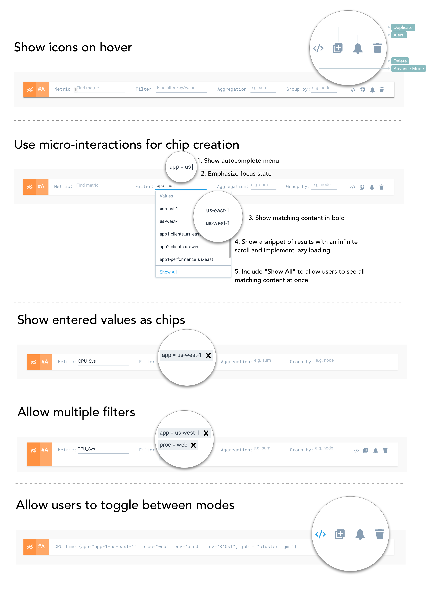

Simplifying Complexity
Both Kathy and Andre found it hard to write metric queries during critical times. By understanding the semantics of the query language and observing how users grouped data, we broke down a query into four broad categories: Metric, Filter, Aggregation, Group By.
Sense of Freedom
Neither Kathy nor Andre knew what to start typing. While they wanted some level of guidance, they also wanted the flexibility to gather unique insights. Through user interviews and query writing observations, we realised the need for an autocomplete component.
While Andre wanted to monitor the server health of us-east and us-west regions, Kathy was interested in popular travel places/times from San Francisco and New York City. Deciding the level of freedom that users should have when using a structured query builder was the core question.
After multiple iterations, based on user feedback, implementation constraints and timelines, the degree of freedom was decided. Two menus would be shown depending on whether a user is just starting off with the search for either a key/value or picking a value after a key is selected.
Interactions
With the introduction of the structured query builder, there were key concerns that had to be addressed - "How do we switch to the other one? Does this tool handle all kinds of queries? I want to be able to modify queries using the query language too!"
While this was an essential function, the users neither wanted it to stand out explicitly or be hidden within menus. This led to finer interaction design questions.

Real-world edge-cases
Andre who was an expert user pointed out nuances and edge-cases that had to be addressed. For instance, Andre often leveraged multiple complex queries to get to the root cause of his bug. He wrote a second query to take in results from the first and feed it to the third.
Error handling and accessibility were other factors that we looked into at this point.